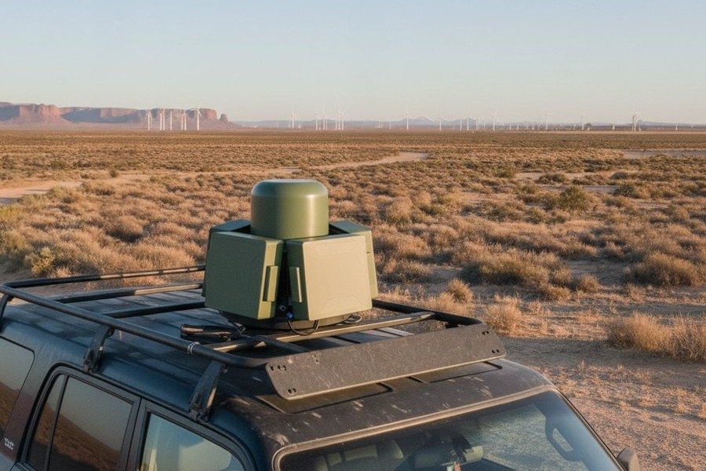
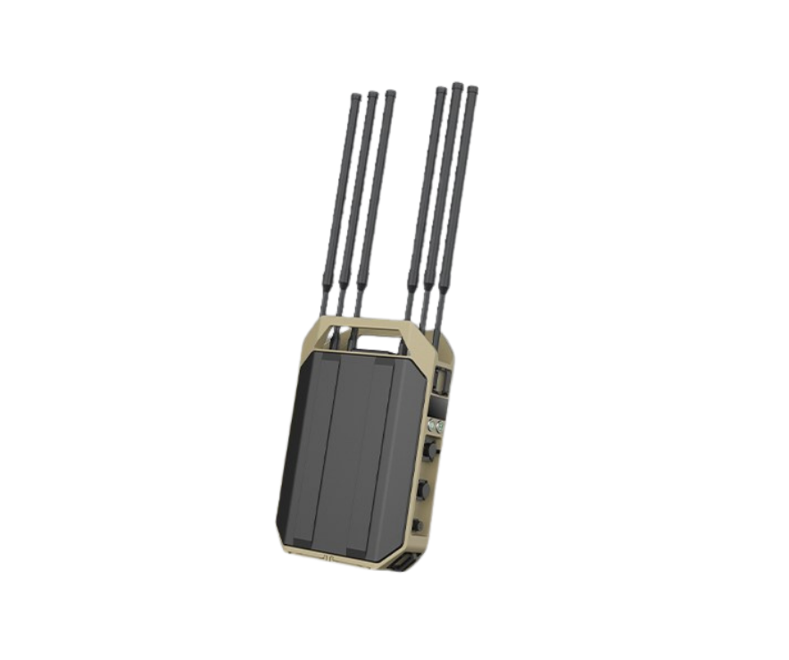
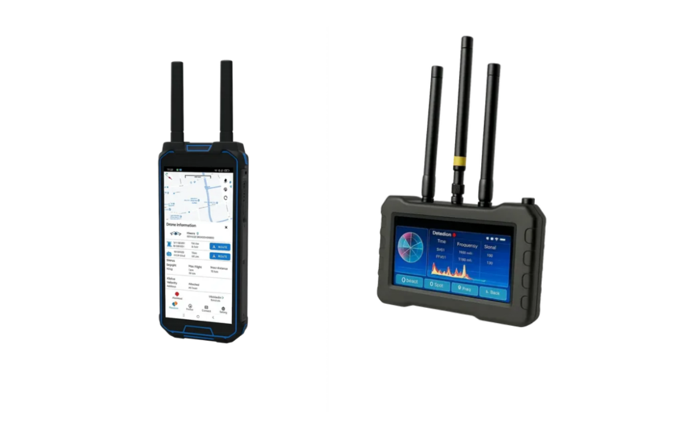

Roof-mounted unit for rapid-response and patrol missions. Full-spectrum protection on the move, with no fixed infrastructure required.
ERK / Systems
Tactical systemsERK SHIELD, TRACE, WATCH and GRID are sold separately and deployed together. Each solves its own problem — air threats, signal collection, hostile networks, sovereign comms — and each reports into the same operational picture.
Full-band detection, FPV video capture, AI-guided tracking and smart jamming, scalable through 1+N network integration.

The fixed configuration provides unattended, round-the-clock coverage of borders, airfields, critical infrastructure and forward operating bases. Individual nodes federate through 1+N mesh integration, so coverage extends by adding masts rather than replacing the command layer.
| Detection band | 70 MHz – 6 GHz (full-band) |
|---|---|
| Detection distance | ≤ 15 km |
| FPV detection | 500 MHz – 6 GHz, snapshot capture |
| Video detection distance | ≤ 3 km |
| Directional scan | 360° horizontal, ±90° vertical |
| Drone library | > 1,000 types recognised |
|---|---|
| Operating temperature | up to +60 °C |
| Network topology | 1+N scalable mesh integration |
| Target classes | Commercial · FPV · DIY airframes |
| Operation mode | Attended or fully unattended |
Every portable variant carries the same full-spectrum RF core as the fixed platform, so a mixed fleet shares one operator skill set and one threat library.

Roof-mounted unit for rapid-response and patrol missions. Full-spectrum protection on the move, with no fixed infrastructure required.

Man-portable for special operations, VIP protection and field deployments. Long battery life supports all-day mission capability, and the four-antenna head deploys without tools or site preparation.

Compact unit for first responders, event security and quick-reaction teams. Immediate threat neutralisation with one-hand operation, with the detected signal, frequency and bearing shown live on the operator's own display.
Radar, RF and electro-optics fused by onboard AI. Sensors are correlated on the platform rather than in the operator's head — the engagement decision arrives already confirmed.
Real-world scenarios where ERK SHIELD delivers proven results.
Fixed arrays at 15 km intervals with 1+N integration give seamless coverage, and autonomous jamming removes operator lag in neutralising incursions.
Key value: 24/7 unattended · full-perimeter coverage · low cost per km
Real-time classification across 1,000+ drone types enables selective jamming of approach corridors without disrupting airport communications.
Key value: selective jamming · FPV capture · ICAO-compatible
Vehicle-mounted portable units supplement fixed installations at power plants, refineries and data centres during maintenance windows or emergency response.
Key value: scalable · fixed + portable · operator-friendly UI
AI-assisted tracking with simultaneous engagement of 200–500 targets sustains force protection against FPV attack in contested environments.
Key value: +60 °C operation · rapid setup · multi-target jamming
Further environments
Multi-platform IMSI catchers from aerial to maritime configurations. Active and passive interception across GSM, UMTS, LTE and 5G NSA — rack-mounted, stackable to 16 channels, mission-deployable in minutes.

ERK TRACE is a 4U rack-mounted collection platform with a common signal core across every variant. The same operator interface and the same collection pipeline apply whether the system flies, sails, sits on a border mast or travels in a vehicle.
| Frequency coverage | 690 MHz – 2.7 GHz |
|---|---|
| Channels | 6 or 7 channel options |
| Scalability | up to 16 channels (stackable) |
| Generations | GSM · UMTS · LTE · 5G NSA |
| Modes | Active and passive interception |
| Form factor | 4U rack-mount, 43 × 66 cm |
|---|---|
| Power input | 19–32 V DC |
| Maximum current draw | 46 A |
| Operating temperature | 0 to +60 °C |
| Management | Web interface, remote operation |
Weight- and power-optimised for airborne carriage on manned aircraft and larger UAV platforms, where wide-area coverage matters more than channel count.
High channel density for maritime patrol and boarding operations, engineered for shipboard installation and sustained operation at sea.
Maximum-power configuration for fixed border and frontier sites where the collection envelope has to reach across difficult terrain.
Vehicle-integrated configuration for mobile operations, on station and collecting within minutes of arrival.
Mission sets
Authorised end users only. ERK TRACE is a lawful-interception class system supplied exclusively to government, defence and law-enforcement organisations operating under national legal authority. Every enquiry is subject to end-user certification and export control approval before technical documentation is released.
An AI-assisted network monitor that finds what should not be transmitting — rogue base stations and foreign IMSI catchers.

Hostile IMSI catchers and unauthorised base stations look like ordinary network infrastructure to a handset. ERK WATCH sweeps the full cellular spectrum, fingerprints every emitter it finds and flags the ones that do not belong — in under a minute, from a unit one person can carry.
| RF scan time | < 1 min (all bands) |
|---|---|
| RX sensitivity | -110 dBm |
| Generations | 5G NR SA/NSA · LTE · UMTS · GSM |
| Special mode | IMSI catcher detection |
| Antennas | 3 × SMA type |
|---|---|
| GPS | Internal GPS module |
| Deployment | Single operator, portable |
| Output | Real-time spectrum display & operator alerts |
Sweep venues, routes and residences before a principal arrives, and detect interception attempts while they are on site.
Continuous monitoring of the RF environment around sensitive compounds, with alerting when an unregistered emitter appears.
Establish the baseline cellular picture around a deployed unit and detect adversary collection assets operating within it.
Pairs with ERK GRID. When ERK GRID provides sovereign private LTE for a deployed force, ERK WATCH verifies that nothing else in the area is offering service to the same handsets.
A tactical base station providing sovereign private LTE where no civilian network reaches — or where using one is not an option.

ERK GRID stands up a self-contained cellular network under the operator's own control. Traffic never touches a commercial carrier, subscriber records stay inside the deployment, and the network exists only while the mission needs it.
| Active users | 4 × 96 LTE (384 total) |
|---|---|
| Channel bandwidth | 1.4 / 3 / 5 / 10 / 20 MHz |
| RF output | 4 × 10 W NR · 4 × 20 W GSM |
| FDD bands | Band 3 / 5 / 7 / 8 |
| RX sensitivity | -110 dBm |
| Antenna ports | 4 × N-type |
|---|---|
| Monitoring | Network monitoring sub-system |
| Management | Operator console with subscriber and call records |
| Deployment | Fixed, vehicle or shipboard installation |
Organic voice and data coverage at sites with no civilian network access, without waiting on host-nation infrastructure.
Restores a working communications layer for responders when commercial networks are destroyed, saturated or offline.
Shipboard private LTE keeps a vessel's crew and embarked teams connected beyond the reach of shore networks.
Diplomatic missions and sensitive facilities operate cellular service that stays entirely inside the perimeter.
Rapidly deployed coverage dedicated to the security operation, isolated from the congestion of public networks.
Dependable comms along frontier sectors where coverage is thin and commercial service is unreliable or untrusted.
Tell us the mission — coverage area, threat picture, existing sensors and timeline — and we will return a system configuration.